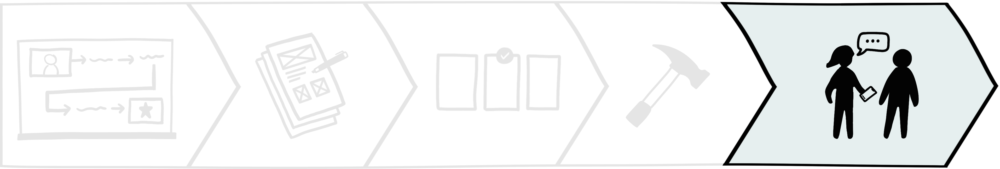

PostUp
Connecting remote workers to ideal public workspaces anywhere.
Timeline
- 5-day design sprint
- December 2023
Tools

The challenge
With the rise of remote work, PostUp—a startup focused on building an online community for freelancers—observed a growing need for reliable information about public workspaces on their platform. Remote workers often struggle to find suitable locations, such as libraries or coffee shops, wasting time on unsuitable visits due to inadequate online resources. In addition, there is a scarcity of suitable locations.
How can I connect remote workers with suitable public workspaces and drive PostUp's business objectives?
The constraints
I was tasked with designing a subscription-based mobile app for PostUp, priced at $5.99 per month. I received limited materials and had to work independently with no support on a time crunch.

Business
- Subscription $5.99/month
- Feature existing places only
- Subscription ($5.99/month)
- Feature existing places only
Time
- Tight 5-day deadline
- Limited testing
- Limited iterations

Resource
- Limited research materials
- No access to PostUp
- No access to existing users
Technical
- Mobile-app solution
The Final Solution
In 5 days, I developed an MVP prototype and monetization strategy. It helps remote workers find suitable public spaces by providing detailed information on amenities like WiFi speed and noise levels. My monetization strategy includes a "PostUp Partners" program, offering perks such as real-time seating updates and promotions, enhancing the remote work experience and creating a new revenue stream for PostUp.
the process
Designing a MVP prototype in 5 days
I utilized a modified version of Google Venture's (GV) design sprint, a structured five-day process for rapidly solving critical business problems through design, prototyping, and testing. Adapting this process for solo work, I was able to efficiently deliver a design and business solution for PostUp.
Monday
Mapping the problem

user research
Reviewing PostUp's research
On day 1, I kicked off the sprint by reviewing PostUp's user research. The team talked to 8 remote workers about finding public places to conduct remote work. Unfortunately, the research materials were concerningly limited: a slide deck of 8 interview quotes with a user persona and one audio recording of a single interview. Despite limited data, here's what I found:

Remote workers value stable wifi connection and quiet ambiance.

I usually need to jump on the computer for a video chat, so I need to make sure the Wifi is good . . . there isn't too much background noise.
Andy
Outlets and restrooms are must haves. Quality food is nice to have.

If a place has Wifi, outlets, and bathrooms—that's all I need. If I need to buy some food or coffee to stay there, I really don't mind.
Claire
Info on current crowd levels, noise levels, and open seats is helpful.

I like to know how crowded a place is. If I'm doing independent work, I don't want it to be super loud. If I'm meeting clients or coworkers, I want to be sure we can get a place to sit and talk . . .
James
In sum, remote workers struggle to find suitable workspaces due to limited accurate and relevant information about work environment details online, such as availability of outlets and stable Wi-Fi, noise levels, and seating availablity.
Meet Nina
Using my new insights, I enhanced PostUp's original user persona to better guide the rest of my project. Meet Nina! She encompasses all the goals, needs, and painpoints of remote workers. Given limited research materials, she was a crucial tool in helping me make informed decisions throughout the design process—I often referenced her to ensure my designs were user-centered.
View full image ->
remote worker journey
Brainstorming an end-to-end experience for Nina
I mapped a possible journey that focus on Nina's routine tasks and workspace preferences to optimize her search process. On the app, she'd select a task and see results with preset filters. I wrestled with taking her straight to results but I was concerned her preferences may differ from the presets.

- Select remote work goal: quiet work, meeting, call
- Adjust search filters: amenities, noise level, distance, table sizes, etc.
- Initiate search
Tuesday
Sketch

competitive research
Drawing inspiration from competitor products
I wanted to create a clean interface with search and product comparison features, so I performed lightning demos of Airbnb, Google Maps, Credit Karma, and Betterment to gather insights into best practices and user expectations.

Among my demos, Airbnb was the winner. 🥳


Clean layout
Intuitive design
Clear structure
Clear typography
Easy navigation
Optimized user flow
storyboard
Outlining the critical steps in a remote worker's journey
Drawing from my lightning demos, I did a Crazy 8s exercise, sketching 8 frames in 8 minutes as starting points for my design. I was a bit intimidated at first, but I really enjoyed howw productive it was!


Out of the 8 sketches, I selected the most critical screen and developed a 3-panel storyboard. I chose the "search results" screen (the middle below) because it is the central hub for remote workers to compare and decide.
This exploration helped me narrow the scope. I decided that my key design consideration from this point on would be to centralize essential information for remote workers to optimize decision-making.
wednesday
Decide

storyboarding pt.2
Completing the journey with user stories
On day 3, I expanded the 3-panel storyboard into a detailed comic-style narrative of Nina's journey using PostUp in a new city. This helped me immerse myself in Nina's perspective to deepen empathy for her needs and identify potential features that could meet those needs.
Placing Nina in an unfamiliar city allowed me to anticipate diverse user behaviors and needs.
By asking "How might Nina react?" and "What actions might she take next?", I identified key touchpoints to develop user stories and flows. This approach aligns with my principles of creating scalable and adaptable solutions, which further developed my user flow. Here are some highlights:
What might Nina want to see when she opens PostUp?

Being in a new city, Nina likely has little knowledge of her
surroundings, so she's probably keen to explore nearby
workspaces. Therefore, the ideal home screen should show Nina
a map that visually displays available options around her
current location.
Where should Nina "search by task"?
Upon expanding my storyboard, I realized two design errors from days 1 and 2.

Day 1: Optimizing search process by taking users directly to search results after task-selection might backfire if the presets are even slight inaccurate.
Day 2: The lack of transparency behind the presets if located on the 'Discover' page might be confusing.

Solution: Create a 'Search page' that allows people to conduct a 'New search' or select 'Customizable presets'.
What if Nina realizes she has additional needs?
With a new 'Search' page, I was able to display the details on the preset filters to ensure transparency. As for my conflict regarding whether or not Nina should be able to adjust filters immediately after task selection, after reviewing my user research, I realized most people share the same preferences across all tasks! Being taken to a filters page each time Nina selects a preset could be counterproductive. She can also just conduct a new search. Besides, testing may reveal the ideal flow!
In addition to the workspace environment, what else might Nina want to learn?

The final highlight of my storyboard evolution was adding a 'Reviews' section for each workspace. After Nina learns about the workspace's details, she might want to see what other people have to say or seek more details, especially since that's what she's used to doing with her existing tools. For a more intuitive experience, users may navigate between the pages by swiping horizontally.
thursday
Prototype

preparation
Design checklist
It was finally time to design and prototype! As I reviewed my work so far, I realized I made a mistake: Nina's journey ends when she settles into the workspace, not when she chooses a workspace. To stay organized, I sketched a new map to adjust my scope and brainstormed a list of features before prototyping.

Learning from past challenges
Designing the prototype was challenging because I struggled to anticipate user behaviors with the time and research constraints. With only one shot at a test and no time to iterate, I wanted to prototype alternative routes to prevent task failures.
I recalled learning in past projects that users often focus on essential features and ignore non-critical ones. So, I streamlined my prototype to a single user flow and refined my testing strategy to reveal user behaviors and expectations without covering every possible route.
Streamlining decisions
with efficient results.
Simple navigation flow
I designed the flow for users to select a task on the search page and go directly to the results. Initially, I considered adding a step for filter selection to accommodate varying preferences. However, research showed that remote workers generally have similar needs, so I streamlined the process.
Intuitive commute experience via Google Maps integration
To simplify frequent business trips, commute times are dynamically adjusted based on the area's walkability score via Google Maps integration. Low walkability areas display driving durations, while high walkability areas show walking times, with the option to adjust as needed.
Scannable workspace details upfront
I designed the search results to present key details like suitable work, amenities, and interior photos via icons to help remote workers quickly assess without clicking into each listing.
Focusing on priorities
to combat choice paralysis.
Single-page for efficient navigation
I consolidated my sketches into a single-page layout to prioritize above-the-fold details, ensuring efficient navigation. To avoid cognitive overload, I used a minimalistic design for readability and stored additional details in "Info" icon buttons. Leveraging social proof, I displayed each reviewer's occupation to enhance trust and engagement.
Comprehensive environment details
I crafted minimal, scannable copy, and included several "Info" icon button for additional details to streamline the interface. I was inspired by clothing size charts to ensure users have access to essential information without feeling overwhelmed.
Stashed Features
I set aside these features due to limited research support through verbal walkthroughs.
-

Seating availability
This was mentioned by one interviewee. It could expedite a remote worker's journey and monetized.
-

Reservation system
This has great potential but its rarity in coffee shops is a challenge. It also could be monetized.
-

Home search bar
As a common user route, I anticipated some users opting for this route instead of the search page.
-

Popular times
Given its popularity in other apps, it could enhance the UX and boost competitive advantage.
Friday
Test

On my last day, I conducted remote usability testing over Zoom with 5 participants, including both college students and working professionals who frequently work in public spaces and use mobile apps to find locations.
Objectives
- Identify unmet needs and unnecessary features
- Uncover the primary user route(s), behaviors, and expectations
- Evaluate pending features
Cost-effective testing approach
To maximize insights from a single round of testing, I used verbal walkthroughs instead of prototyping every feature. Participants described how they would begin tasks and interpret UI elements without interacting with the screen. This method allowed me to efficiently assess user flows and expectations while keeping the testing cost-effective.
Results
Overall, the feedback I received was overwhelmingly positive. They didn't find any essential details missing, but a couple of them suggested highlighting the lighting and restroom capacity. There was minimal confusion with the iconography and labels, but participants voiced that this is reasonable given how most of the essential details my prototype provides do not exist in their current solutions Therefore, they did not find this to be a significant issue. Here are the details:
Design validation
- Users loved the intuitive navigation and quick access to workspace details
- Everyone praised the visual design
- All users completed tasks efficiently and wished the tool existed
Areas of improvement
- Some users found a few icons and labels confusing, but they acknowledged that the app provided unique details not available in their current solutions
- Minor suggestions included highlighting lighting and restroom availability
Here's an excerpt from the usability test with participant #1, where she offers positive feedback on the prototype after completing her given task:
final wrap-up
Iterations and monetization strategy
Iterations
Given my test findings, I believe that the prototype can be improved by incorporating a
few more features and further
optimizing
the user experience through reducing touchpoints.
- Remove the search page and add a reservations page
- Remove searching by type of work
- Implement filters directly on Discover page
- Add respective star rating to map icons for more context
- Add workspace detail on lighting
- Add workspace detail on restroom capacity
- Replace standardized details on work environment with explicit details
Business monetization strategy
I also brainstormed a monetization strategy that can increase business revenue streams for PostUp. Considering the growing trend toward remote work, I see a promising opportunity for a mutually beneficial collaboration between PostUp and local businesses. Therefore, I propose an additional subscription and referral model that invites businesses to become a “PostUp Partner” to access premium in-app business features below:

Reservation system
Only PostUp Partners can access the in-app table reservation
feature, enhancing user convenience and potentially attracting
more customers. Users may filter their search results for
locations that offer reservations.
Data analytics
PostUp can offer valuable insights derived from user behavior, like traffic trends and user preferences, enabling partners to better understand their customer base, thereby allowing them to tailor their services and improve customer satisfaction.
Exclusive promotions
PostUp partners can offer exclusive in-app promotions, encouraging engagement and customer acquisition. Subscribers may filter for locations with ongoing promotions.
Rewards system
Partners may offer exclusive rewards for users. Using a unique QR code, users may earn points and stamps for their activities, which can be redeemed for tangible rewards, encouraging frequent use and loyalty.
Conclusion
Overall, my strategies aim to establish a sustainable revenue model that enhances the
overall remote working experience throughout their user journey. This
collaboration could incentivize businesses to enhance their
amenities, catering to remote workers and in turn enriching the
overall user experience for Postup subscribers.
In sum, these strategies offer additional revenue streams for
PostUp while boosting the app's value proposition for both users and business partners.
Final prototype
Streamlined search process
Iterations
- Replaced search page in bottom navigation with reservations
- Added search bar on search page
- Added quick filter buttons below search bar
- Added rating to location icons
- Replaced suitable work icons with clear labels
Previous
Iteration
Enhanced workspace profile
Iterations
- Relocated interactive buttons to maximize content above-the-fold
- Enhanced typography for readibility
- Refined work environment labels for clarity
- Reorganized content hierarchy and added new details
- Added a reservation system feature
- Added menu items section
Previous
Iteration
Next Steps
Shipping the MVP
If I had more time, I would conduct another round of usability
testing to validate my
iterations. I would also
further optimize the user experience
and
iterate screens for the rewards system, exclusive promotions, and
reservation system. I would
extend and complete the user flow
to include reserving a table and the
final interaction with the app—earn PostUp points
in-store with an purchase at an official PostUp partner location. If I had a team to ship
this prototype, I would implement the designs from my monetization strategy and develop
the user flow for PostUp partners to integrate them into the ecosystem.
Personal growth
A long-term goal of mine is to increasingly streamline my
design process. I aim to learn and develop efficient design
strategies to streamline the product design cycle, maximizing
company resources and reducing business costs. In other words, I
want to
learn to design as efficiently as possible to cut down business
costs and accelerate business growth. Given the success of testing via verbal
walkthroughs, I want to learn more cost-effective
ways of usability testing.
Reflection
Challenges
This was my first time conducting a design sprint, and writing this case study helped me realize how much I've grown since my previous project, TasteBuds, which has been a very affirming experience. Challenging myself to develop a monetization strategy for a scalable, resilient product was incredibly rewarding. Leveraging my business acumen to create a user-friendly and profitable product was really exciting. This definitely reinforced my choice of product design over solely UX design, given my diverse skill set and appreciation for the entire product lifecycle.
Lessons Learned
User behavior and expectations
As I progress as a product designer, understanding user behavior and expectations has empowered me to anticipate needs and optimize usability tests. My favorite parts of this project was further streamlining my design process and navigating project constraints, especially in creating more effective user flows and designing cost-effective usability tests to maximize business revenue.
Expanding on TasteBuds
Designing PostUp gave me the opportunity to expand my prior case
study on my previous project TasteBuds—a social
recommendation mobile app that connects diners with trusted
friends and personalized suggestions. This sprint validated my
research and test insights on user behavior and motivations in TasteBuds. Both
studies taught me the importance of novelty and innovation to
enhance user engagement and prioritize user-centricity. This
experience definitely reinforced my commitment to research and
anticipatory design, boosting my confidence in pursuing
innovation!
Overall, this was a very rewarding experience, and I can't wait to apply my learnings in my future projects!
Thank you!
Thank you for reading my case study! Feel free to experience my
prototype: Find somewhere quiet to do some remote work nearby,
reserve a table, and scan your profile QR code to earn points on an
in-person purchase. Open the prototype in a new page
here.
Feel
free to reach out to me on
LinkedIn
or via email at
mhu.contact@gmail.com
to share feedback and/or discuss collaboration opportunities. Any
and all communication is appreciated!